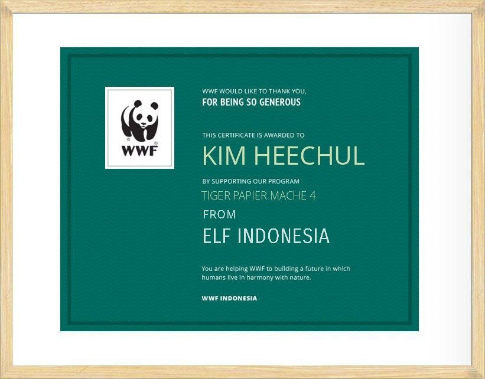
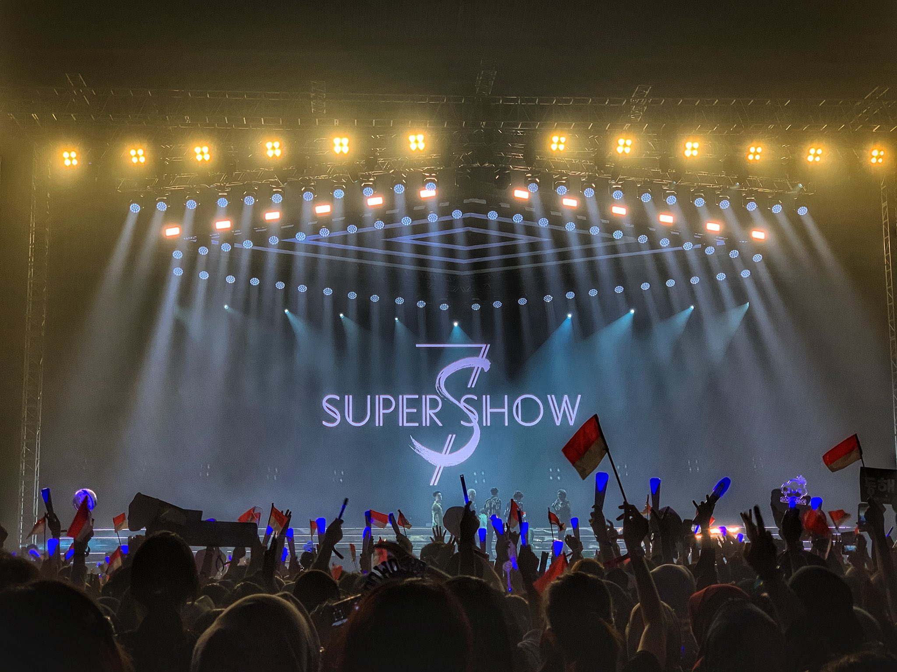
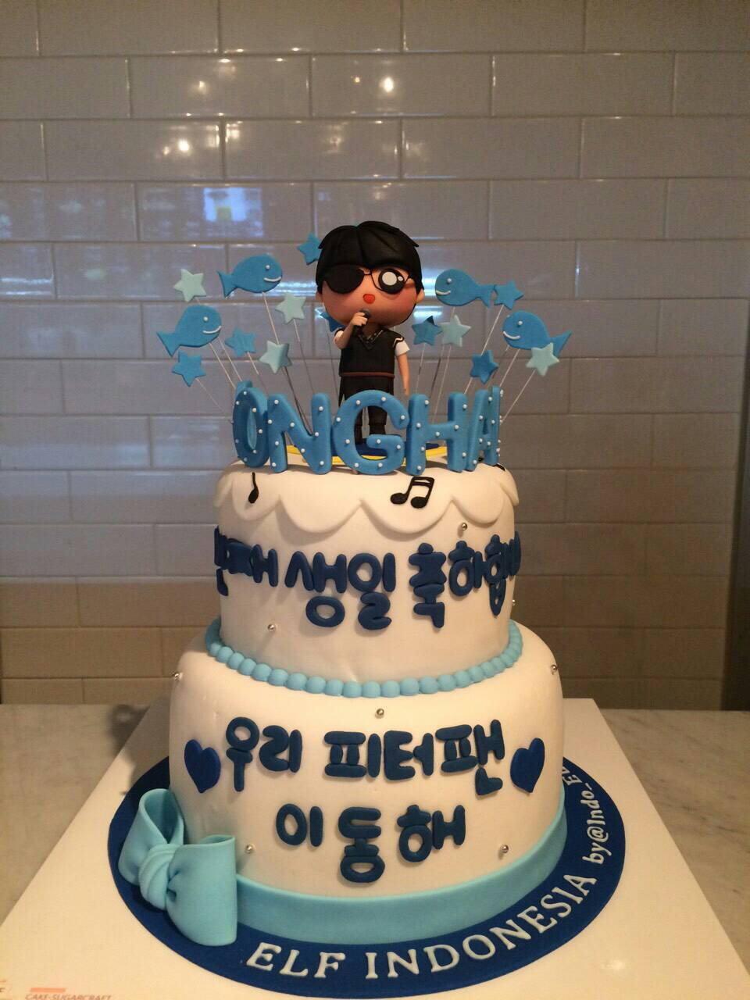

ELF INDONESIA
ELF INDONESIA FANCLUB OFFICIAL SUPER JUNIOR

About Us
"ELF atau Everlasting Friends adalah nama resmi dari komunitas fans Super Junior yang dibentuk pada 2 Juni 2006 yang namanya sendiri diusulkan oleh leader Super Junior yaitu Leeteuk. Website ini dikhususkan untuk ELF yang berasal dari Indonesia. Tujuannya adalah untuk terus mendukung aktivitas member Super Junior baik grup maupun solo sebagai bentuk apresiasi dari kerja keras member Super Junior selama ini. ELF Indonesia banyak menggelarkan event, seperti membuat project gathering dengan berbagai ELF diseluruh Indonesia, menggalang dana untuk musibah yang terjadi khususnya di Indonesia, memberikan hadiah kepada member Super Junior, dan sebagainya."
"Kami juga mengundang untuk ELF diseluruh Indonesia agar mendaftar ke website kami agar bisa bergabung secara resmi sebagai komunitas ELF INDONESIA dan dapat berpartisipasi dalam kegiatan komunitas kami yang memiliki sekali banyak manfaat seperti menambah relasi baru, melakukan project bersama untuk saling menolong antar manusia, dan melakukan event seperti gathering dengan ELF Indonesia."



Profil Editor
Perkenalkan nama saya Ananda Safira. Lahir di Jakarta, 9 Maret 2000 dan berusia 20 tahun. Saya tinggal di depok dan sedang menempuh perkuliahan di UPN Veteran Jakarta jurusan S1 Sistem Informasi dan saat ini sudah berjalan semester ke - 5. Saya anak ke - 2 dari 3 bersaudara. Jika ingin menghubungi saya lebih lanjut bisa menghubungi kontak saya :E-mail : anandas@upnvj.ac.id | Instagram : @ndafir_ | WA : +6289677842625